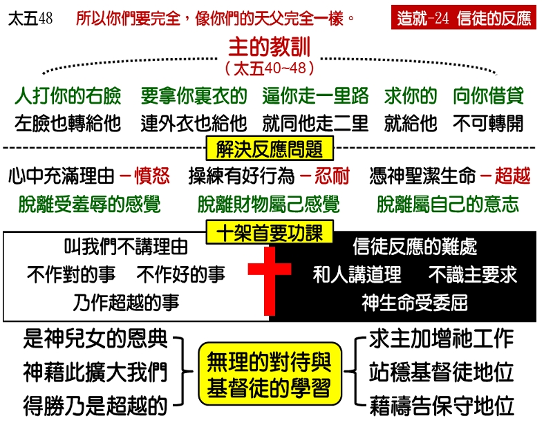

诗歌：339 首、补122首
重要经文：
马太福音五章三十八至四十八节：你们听见有话说，“以眼还眼，以牙还牙。”但是我告诉你们，不要抗拒恶人；反而无论谁打你的右脸，连另一面也转给他。那想要告你，要拿你里衣的，连外衣也让给他；无论谁强逼你走一里路，你就同他走二里。求你的，就给他；向你借贷的，不可转开不顾他。你们听见有话说，“当爱你的邻舍，恨你的仇敌。”但是我告诉你们，要爱你们的仇敌，为那逼迫你们的祷告，你们就可以作你们诸天之上父的儿子；因为祂叫祂的日头上升，照恶人，也照好人；降雨给义人，也给不义的人。你们若爱那爱你们的人，有什么赏赐？税吏不也是这样行么？你们若单向你们的弟兄问安，有什么过人的长处？外邦人不也是这样行么？所以你们要完全，像你们的天父完全一样。
纲目要点：
壹 基督徒的反应和不信的人两样。
贰 主在山上的教训——太五38~48。
参 必须解决反应问题。
肆 人对事三种不同的反应：讲理由、好行为、神圣洁生命的反应。
伍 基督徒是被拯救脱离羞辱，财物和意志。
陆 十字架的第一个功课是叫我们不讲理。
柒 基督徒不作对的事，好的事，乃作超越的事。
捌 信徒在反应上的难处。
玖 这是神儿女的恩典。
拾 神借这些反应要把我们放大。
拾壹 基督徒的得胜是超越的。
拾贰 我们的反应乃要增加主的工作。
拾参 基督徒的地位要站稳。
拾肆 关于生命反应的两件事：天天要祷告、保守基督徒的地位。
信息选读：
人生有一半以上，是活在反应里
人说话，我们感觉快乐，这是反应。人说话，我们感觉生气，这也是反应。人作一件事，我们觉得好，这是反应。人作一件事，我们觉得不好，这也是反应。人刺激我们，我们受刺激，这是反应。人对我们不起，我们发脾气，这是反应。人冤枉我们，我们申辩，这是反应。人逼害我们，我们忍耐，这也是反应。所以，你如果将人的生活分析一下，就知道人生有一半以上，是活在反应里。地上的上算，是最不上算的。还是让人打，你回到家里，觉也睡得好，饭也吃得好，诗歌也唱得好，爬到山上去，看见月亮特别亮。千万不要以为，我们作上算的事才上算。我相信，反应得对，路才走得对。反应得对，生活的原则才弄得好。
基督徒的反应和不信的人两样
我们基督徒，也是活在反应里。不过，不信的人有一种的反应，信的人却有另一种的反应。我们看见一个人的反应如何，就知道这一个人是如何。绝没有基督徒而可以有非基督徒的反应。也绝没有非基督徒而能够有基督徒的反应。所以，你们要知道一个人到底是什么种的人，只要看他们有什么种的反应就可以了。
必须解决反应问题
你们如果能够把这一个反应的问题解决，你们基督徒的生活，最少解决了一半。因为人作事，我有反应。人说话，我有反应。人有什么态度，我就有什么态度。我这一个人，简直是充满了反应。所以基督徒的人生，一大半是反应的。如果我的人生一大半是反应，而这一大半是基督徒的反应，我就能够在神面前蒙神悦纳。我的反应如果不好，我这一个基督徒就作得不好。
你们也许要问我，为什么我们要注重这一件事？我顶直的对你们说，今天我们所摸着的这一点，你们不要以为不要紧。二十多年来，在我里头有一个很重的感觉，有许多人作了十年、八年，甚至二十年的基督徒，山上的教训也读过几十遍了，还不知道主对于他反应的要求是如何。结果他作了多少年基督徒之后，他的反应还根本是错的。什么事情都在那里讲理，都在那里讲律法，都在那里讲公义，都在那里讲该不该。
人对事三种不同的反应
人对于普通事情的反应，可以分作三等。第一，是讲理由。第二，是好行为。第三，是神圣洁生命的反应。你在讲理由的一层里，你的反应是发脾气，发怒。你在好行为的一层里，你就忍耐。你在神圣洁的生命里，你就超越。这些是我们对于事情可能有的三种不同的反应。主对我们所定规的反应，不是人打了我们的脸，我们就生气。也不是人拿我们的里衣，我们就忍耐。主乃是说，人打我们的右脸，我们就转过左脸来，再给他打。人要我们的里衣，我们连外衣也给他拿去。人要我们走一里路，我们就走二里路。这一种的反应，不叫作忍耐，是叫作超越。这一种的反应，是爬到人的要求之上去。人只要求这么多，我在神面前有更多，能够应付他的要求。
基督徒乃是作超越的事
什么叫作基督徒的反应？基督徒的反应不是作对的事，也不是作好的事，乃是作超越的事。一个神的儿女，当他越受逼迫的时候，越给人挤到一个角落去的时候，越没有路走的时候，他应该爬得越高才好。你给人一挤就落下来，这是可怜的事。发脾气、讲理由、忍耐，这是可惜的事。当人越逼迫你，叫你没有出路，碰到墙了，你能够爬得更高，这才是基督徒。神借这些反应要把我们放大
我们在这里作这一件事，这是为着什么？让我顶直的告诉你们，山上的教训是为扩充我们的度量。神借着这些的反应把我们放大。许多的东西，在我们身上很宝贝；但是我们活在山上的教训里，就让神把许多东西剥去。里衣去了，外衣再去；再一次里衣出去，外衣再出去。你这一个人就越过越大。你比你的外衣要大多少倍，你比你的里衣要大多少倍。
许多的基督徒，就是像他所穿的衣服一样，小得很。一件衣服就摸着了他，一件衣服就值得他发脾气，一件衣服就值得他失去了信徒的体统。唉，我们到处所碰着的，都是小的人。基督徒若是能够大，就还可以再大，因为神是把一个大的生命给了他。你一件衣服可以出去，一百件衣服也可以出去。人强迫你走一里路，你可以走；人强迫你走两里路，你也可以走。这样，你这个人就要给神放大。
这些年间，我在世界里，一直碰着的都是小人。我在召会里，一直碰着的，大的人也不多。我盼望初信的弟兄姊妹，一开头就走这一条路。按着神的生命而有超越的反应，那是长大的基本条件。如果你们能够按着神超越的生命，一直在那里反应，你们就能越过越大。物质的东西不能限制你，轻看、羞辱不能限制你，连你自己刚强的意志也不能限制你。你就能够一直的长。不然的话，在召会里就要充满了许多的小人。
基督徒的得胜是超越的
我不是说，走第二里路就够。走第二里路是一个原则。那一个原则就是说，是超越的。左脸是一个原则，那一个原则是超越的。什么叫作超越呢？超越就是爬在事情的上面。如果有人打你的右脸，你记得马太五章，你说，我要咬住牙根给他打。他要我的里衣，我勉强的给他。他勉强我走一里路，我只好陪他走二里。这样的作没有用处。你不是超越的，你爬得不高。什么人才能够给人打第二面脸呢？乃是说，我被人羞辱的时候，主给我一个丰富的生命，所以你打我的右脸，我再给你打左脸。你强迫我走一里路，主给我的生命有得多，还能够陪你走第二里路。所以基督徒从来不是勉强的，基督徒的反应从来不是仅仅够的。有的人对你坏到极点，那叫右脸。但是你能加倍的给他，你在神面前还能够得胜，那一个叫作左脸。左脸，就是充分。左脸，就是有余。基督徒得胜的情形，不是仅仅够的，基督徒得胜的情形是有余的。
课程复习：
一 请说明基督徒的反应和不信的人有何不同？
二 为何说我的反应如果不好，我这一个基督徒就作得不好？
三 人对于普通事情的反应，可以分作哪三等？
四 为何按着神的生命而有超越的反应，就是长大的基本条件？
五 左脸是一个原则，那一个原则是超越的。什么叫作超越呢？
